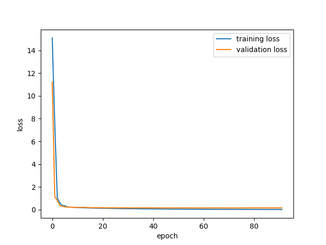
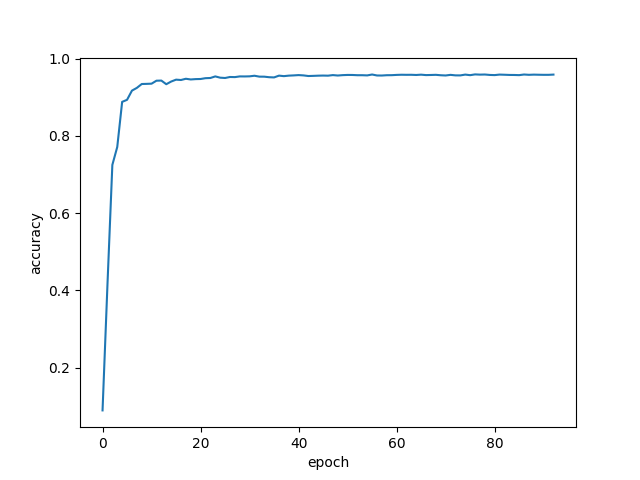
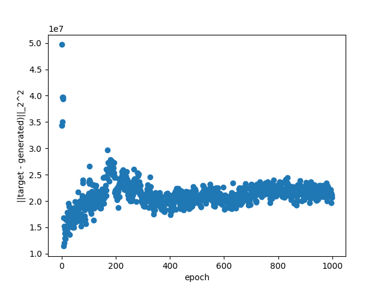
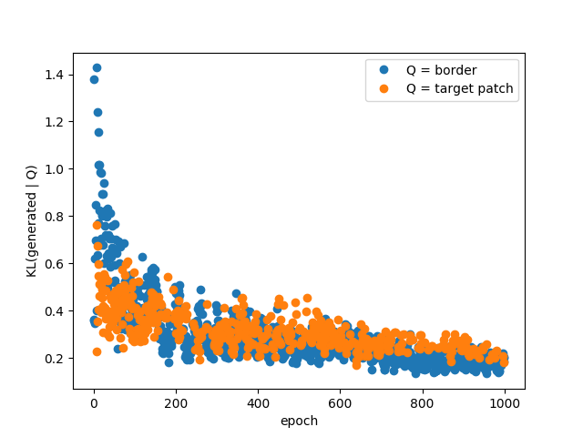
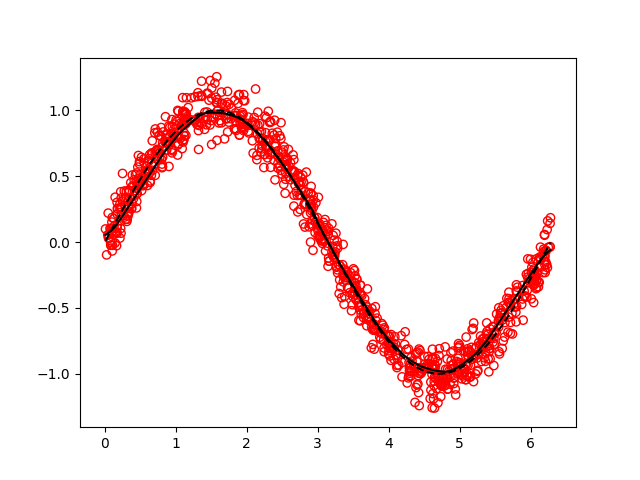

IFT6266 project blog
Table of Contents
1 Status report: convolutions!
The main change since my last report is that convolutional and pooling layers are now implemented. This ended up being more straightforward than I anticipated, using theano's conv2d and pool2d operations.
As usual, it is important to cross-check that my implementation is working as intended. To do so, I've implemented the LeNet-inspired network from deeplearning.net/tutorial/lenet.html and ran it on mnist.
 
Excellent! Then, I tried a long shot: blindly adapting the input and output of that model to solve our image generation task. After 200 epoch, we have something like:
Which is underwhelming, to say the least. Oh well! As I've said, it was a long shot.
1.1 Next steps
I am currently in the process of implementing a recurrent layer such that I can use the captions. I first idea I'd like to try is to train some sort of auto-encoder on the captions to learn some useful representation that could be fed to a downstream model. I'm curious to see how much it would help.
After that layer is implemented, it would be worthwhile start optimizing and trying more involved models such as GANs.
2 Status report
A few things have changed since the last report.
2.1 Dropout
I implemented a dropout layer, which can be found at https://github.com/gagnonlg/IFT6266-project/blob/master/network.py#L51. Following the obvious implementation, it uses a theano "sharedrandomstream" to sample a binary mask for each input vector. The randomstream can be passed to the constructor such that we seed the generator only once for all layers.
2.2 Early stopping
I tried to setup some early stopping mechanism, which monitors the training loss. Perhaps unsurprisingly, I didn't have much sucess at using this loss since it is not smooth at all.
To gain insights into this, I looked the behaviour of the squared distance between the generated and the target patch for one image in isolation as a function of the training epoch.

Note that this is an image from the validation set. We can see that it's not really a stable indication of the fit quality! It jumps around a lot, especially early in the fit where essentially randomly generated patches get better scores than later-on.
For now, I've simply turned-off this early stopping while I look for a better strategy. To mitigate the problem of the instability of the metric, maybe using a moving average to smooth things out and using a burn-in time of ~ 100 epochs could work.
2.3 Quantitative metric
I also looked into alternative metrics to quantify the quality of the generated image, which as we all know is an interesting problem in itself. We can see an image as a collection of pixels, which themselves can be viewed as instances of 256 different classes. In this view, it is possible to measure a probability distribution over pixel values for a given image. It is then possible to measure the Kullback-Liebler divergence (KL) between this distribution and another one. KL measures (in a sense) how much 2 probability distribution differs. We can choose to compare the distribution from the generated image with the true image, or the distribution from the border.

This measure jumps around also, which suggest that smoothing might be necessary, but it actually seems to be a good indication of the fit quality. Surprisingly this works as well when comparing with the true center patch or with the border, which suggest that unsupervised learning might be possible. Of course, minimizing this divergence only ensures that the pixels are sampled from the right distribution but it cannot build the required structure. It could be used as an unsupervised pre-training pass followd by a "traditionnal" supervised fine-tuning pass.
2.4 Output layer
It occured to me that it might be a bad idea to use sigmoid activations at the last layer because they saturate and since I'm training with MSE loss, the training could be made more difficult by the vanishing gradient. I changed the last layer of my nominal model and trained with the same other hyperparamters. After 1000 epochs, the training still has not converged:
This suggest that optimizing the hyperparameters is warranted. However, I won't spend time doing that now before at least implementing a convolutional layer (this is the next step!).
3 Introduction
So I think it is about time I write an introductory post for my IFT6266 project blog.
During the last few weeks I've been slowly but surely starting to implement a baseline model for the inpainting task. To begin, I've chosen a simple densely connected MLP which I think should perform fairly well and is relatively easy to implement, even in straight theano which I'm not really used to (mainly used Keras in the past).
3.1 The Code
The code can be found on github: https://github.com/gagnonlg/IFT6266-project. Mainly of interest is the "network.py" file which implements the basic blocks needed. I actually take inspiration from the Keras abstraction of a model being a stack of layers. Each layer follows a simple API consisting of five methods:
- Layer.expression(self, X)
- Returns a theano symbolic expression for this layer, given an input tensor. Defaults to X (the identity).
- Layer.trainingexpression(self, X)
- In case the expression is different at training time, as in the case of a batch normalization layer for example. Defaults to Layer.expression.
- Layer.parameters(self, X)
- Returns a list of trainable parameters for which the gradient of the loss function must be computed. Defaults to an empty list.
- Layer.regloss(self, X)
- Returns a regularization term to add to the loss. This can be used to implement L2 weight regularization, for example. Defaults to 0.
- Layer.updates(self, X)
- Returns a list of updates to add to the training function. Used in batch normalization, for example, to update the running statistics on the mini-batches.
So Far, the following layers are defined:
- ScaleOffset
- Scale and offset the input tensor.
- Clip
- Clip the input tensor within defined bounds.
- LinearTransformation
- X*W + b, a staple of MLP's. Also supports L2 regularization for W.
- ReLU
- The rectified linear unit
- Sigmoid
- The famous sigmoid activation
- BatchNorm
- Batch normalization.
These layers are collected by a Network object, through its add method. The compile methods actually creates the needed theano functions. Right now mse loss is used and SGD with momentum is implemented. The train method iteratively caches chunks of the dataset in a shared variable from which minibatches are sampled for the training.
3.2 Validation
In my experience, it helps a lot to have a simple benchmark problem on which good results are easy to attain fast, in order to validate that everything is working when non-trivial changes are made. The validation used here is the simple problem of fitting a noisy sinusoidal curve. See tests/testnetwork1.py. Using a 2-layer architecture with 100 hidden units per hidden layer, batch normalization, relu activations (but linear output) with some momentum and l2 regularization, the following performance is obtained after only 10 epochs:

3.3 Baseline model
My baseline model for the inpainting problem is a simple 3-layer densely connected MLP with 1000 units per layer, batch normalization, ReLU hidden activations, momentum and l2 regularization. The output consists of individual sigmoids for all pixels which are scaled by 255. The model was allowed to train for 1000 epochs. The performance obtained during the training can be visualised below for a validation image:

The performance is actually better than I expected for such a relatively simple model! The network is quickly able to get at least the luminosity/color gradient right and later on resolves quite well some of the features such as the arm. However, as the training progresses, we can clearly see that the model tends to improve rather slowly.
3.4 Next step
The obvious next step is to implement a convolutionnal layer which I hope will help achieve better performance.
3.5 Note: Setting up the code on the hades cluster
I tried working with the module system but it seemed like a real pain to get a consistent environment setup for all the packages I needed so I resorted to install anaconda, as suggested on a blog from last year's IFT6266 course: https://ift6266.github.io/2016/02/19/install_theano/.